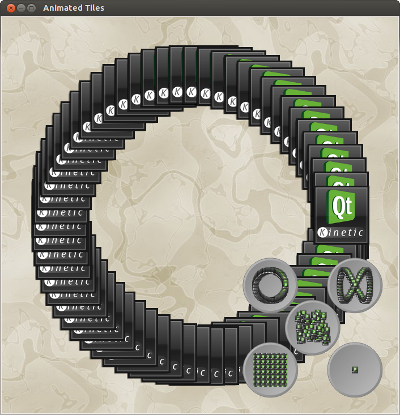

Porting C++ Applications to Qt 5
This topic talks about the Qt Widgets change and provides guidance to handle it. The following step-by-step instructions takes you through the changes required to port the Animated Tiles C++ application to Qt 5:
- Edit main.cpp and change the #include <QtGui> to #include <QtWidgets>.
Note: You can find a perl script called fixqt4headers in the bin directory of your Qt package that will automate many of the required header file changes.
- Edit the animatedtiles.pro and add QT += widgets towards the end of the file.
Note: QtGui is included by default in all Qt applications unless excluded using the QT -= gui directive in the qmake project file.
- Run qmake and make utilities to build the binary.
This creates the animatedtiles executable. Try running the executable to see if the application behaves as expected.

A similar change is needed for porting Qt 4 applications using Qt WebKit to Qt 5. The following step-by-step instructions take you through the changes required to achieve this:
- If using #include <QtWebKit>, add #include <QtWebKitWidgets in your source code.
- Edit the pro file and add QT += webkitwidgets towards the end of the file.
- Run qmake and make utilities to build the binary.
Related topics
- API Changes
- Porting QML Applications to Qt 5 Example
- QML Examples and Demos